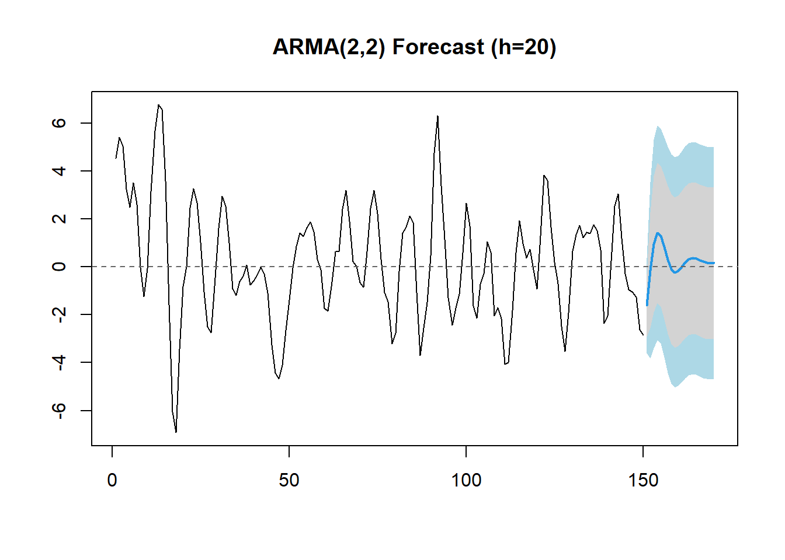
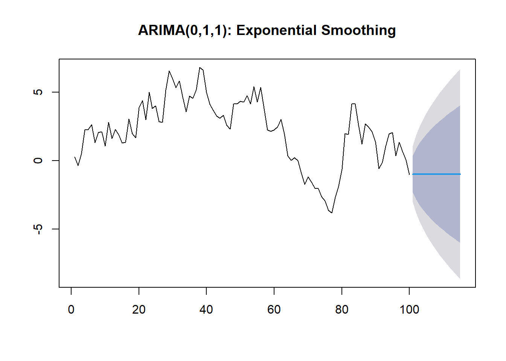
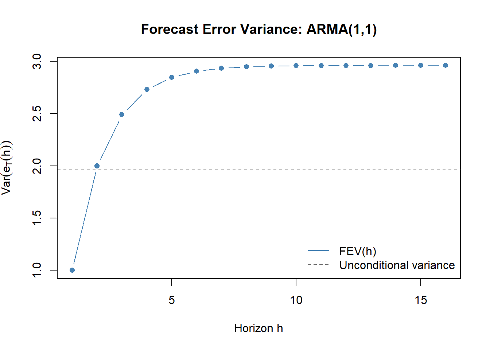
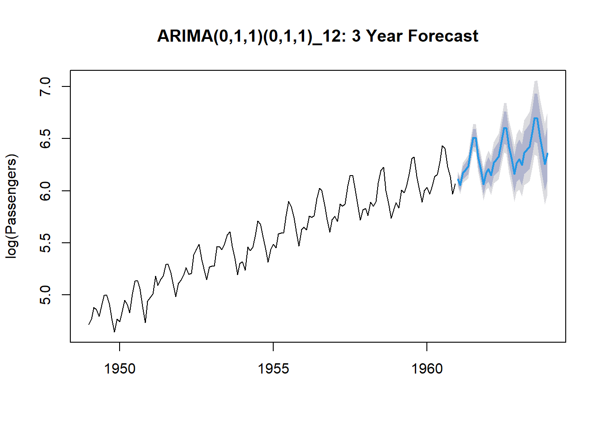

library(forecast) # Arima(), forecast(), tsCV(), ARMAtoMA(): forecasting and cross-validationForecasting with ARIMA
Optimal predictors, h-step-ahead forecasts, and confidence intervals
The Forecasting Problem
Given observations \(X_1, \ldots, X_T\) from a stationary/causal ARMA(p,q) model, we want to forecast \(X_{T+h}\) for horizon \(h = 1, 2, \ldots\). The h-step-ahead predictor is denoted \(\tilde{X}_{T+h|T}\).
The criterion is minimum mean square error (MSE):
\[MSE(\tilde{X}_{T+h|T}) = E\left[(X_{T+h} - \tilde{X}_{T+h|T})^2\right]\]
We restrict attention to linear predictors: \(\tilde{X}_{T+h|T} = \sum_{j=1}^T a_j X_j\) for some coefficients \(a_j\). This is not restrictive: for Gaussian processes, the best linear predictor is also the best overall predictor. In R, forecast::forecast(mod, h = H) computes \(\tilde{X}_{T+1|T}, \ldots, \tilde{X}_{T+H|T}\) along with 80% and 95% prediction intervals, using the psi-weight formula automatically.
Optimal Predictor
Theorem: Among all linear predictors, the one that minimizes MSE is the conditional expectation:
\[\tilde{X}_{T+h|T} = E(X_{T+h} \mid X_T, X_{T-1}, \ldots, X_1)\]
Proof: Let \(\hat{g} = E(X_{T+h} \mid X_T, \ldots, X_1)\) be the conditional expectation and let \(\tilde{X}\) be any other predictor. Write:
\[e_T(h) = X_{T+h} - \tilde{X} = \underbrace{(X_{T+h} - \hat{g})}_{\text{irreducible error}} + \underbrace{(\hat{g} - \tilde{X})}_{\text{additional error}}\]
Then:
\[MSE(\tilde{X}) = E\left[(X_{T+h} - \hat{g})^2\right] + E\left[(\hat{g} - \tilde{X})^2\right] + 2\, E\left[(X_{T+h} - \hat{g})(\hat{g} - \tilde{X})\right]\]
The cross term is zero by the definition of conditional expectation: \(E(X_{T+h} - \hat{g} \mid X_T, \ldots) = 0\), so \(E[(X_{T+h} - \hat{g})(\hat{g} - \tilde{X})] = 0\). Therefore:
\[MSE(\tilde{X}) = \underbrace{Var(X_{T+h} \mid X_T, \ldots)}_{\geq 0,\; \text{irreducible}} + \underbrace{E[(\hat{g} - \tilde{X})^2]}_{\geq 0}\]
The second term is zero if and only if \(\tilde{X} = \hat{g}\) a.s. So the conditional expectation minimizes MSE.
Computing the Conditional Expectation
In practice we apply two operator rules:
- \(E(X_{T+j} \mid \mathcal{F}_T) = \tilde{X}_{T+j|T}\) for \(j > 0\) (unknown future values are replaced by their forecasts)
- \(E(X_{T+j} \mid \mathcal{F}_T) = X_{T+j}\) for \(j \leq 0\) (past and present values are known)
- \(E(Z_{T+j} \mid \mathcal{F}_T) = 0\) for \(j > 0\) (future innovations are unpredictable)
- \(E(Z_{T+j} \mid \mathcal{F}_T) = Z_{T+j}\) for \(j \leq 0\) (past innovations are recoverable as \(Z_t = X_t - \tilde{X}_{t|t-1}\))
Three Equivalent ARMA Representations
Any causal and invertible ARMA(p,q) can be written in three equivalent forms, each useful for different purposes.
1. Direct form (useful for recursive forecasting): \[X_t = \phi_1 X_{t-1} + \cdots + \phi_p X_{t-p} + Z_t + \theta_1 Z_{t-1} + \cdots + \theta_q Z_{t-q}\]
2. AR(\(\infty\)) form via pi-weights (useful for expressing \(Z_t\) from past \(X\)’s): \[X_t = \pi_1 X_{t-1} + \pi_2 X_{t-2} + \cdots + Z_t, \qquad \Pi(B) = \Theta_q(B)^{-1}\Phi_p(B)\]
3. MA(\(\infty\)) form via psi-weights (useful for forecast error variance): \[X_t = Z_t + \psi_1 Z_{t-1} + \psi_2 Z_{t-2} + \cdots, \qquad \Psi(B) = \Phi_p(B)^{-1}\Theta_q(B)\]
The psi-weights satisfy \(\psi_0 = 1\) and decay to zero geometrically, so the sum converges.
Forecasting an ARMA(2,2): Worked Example
Given \(X_t = \phi_1 X_{t-1} + \phi_2 X_{t-2} + Z_t + \theta_1 Z_{t-1} + \theta_2 Z_{t-2}\), apply the operator rules at origin \(T\):
1-step ahead (\(h=1\)): all terms involve \(t \leq T\), so everything is known: \[\tilde{X}_{T+1|T} = \phi_1 X_T + \phi_2 X_{T-1} + \theta_1 Z_T + \theta_2 Z_{T-1}\]
2-step ahead (\(h=2\)): \(X_{T+1}\) is unknown, replaced by \(\tilde{X}_{T+1|T}\); \(Z_{T+1}\) is unknown, replaced by 0: \[\tilde{X}_{T+2|T} = \phi_1 \tilde{X}_{T+1|T} + \phi_2 X_T + \theta_2 Z_T\]
Note: \(\theta_1 Z_{T+1}\) disappears because \(E(Z_{T+1} \mid \mathcal{F}_T) = 0\).
h-step ahead for \(h > q = 2\): all MA terms have dropped out, leaving only the AR recursion: \[\tilde{X}_{T+h|T} = \phi_1 \tilde{X}_{T+h-1|T} + \phi_2 \tilde{X}_{T+h-2|T}\]
This is the same linear recurrence as the Yule-Walker equations. For a stationary process, the forecast function converges to \(\mu\) as \(h \to \infty\): mean reversion.
General rule for ARMA(p,q): for \(h > q\), the h-step-ahead forecast satisfies the AR(p) difference equation. The MA part only affects forecasts at horizons \(h \leq q\).

Notice the forecast converges back toward the mean as \(h\) increases. That’s mean reversion for a stationary process.
The Forecasting Function
For \(h > q\), the forecast function \(f(h) = \tilde{X}_{T+h|T}\) satisfies the AR(p) difference equation \(\Phi_p(B) f(h) = 0\). The general solution depends on the roots of \(\Phi_p(z)\):
- Real distinct roots \(r_1, \ldots, r_p\) (where \(r_i = 1/z_i\), \(|r_i| < 1\)): \(f(h) = c_1 r_1^h + \cdots + c_p r_p^h\), a mixture of exponential decays
- Complex conjugate roots \(r e^{\pm i\omega}\) (\(r < 1\)): \(f(h) = c r^h \cos(\omega h + d)\), damped sinusoidal oscillation with pseudo-period \(2\pi/\omega\)
The constants \(c_i\) are determined by the initial conditions \(\tilde{X}_{T+1|T}, \ldots, \tilde{X}_{T+p|T}\).
Key insight: an AR(2) with complex roots produces forecast functions that oscillate before dying out. The frequency of oscillation is determined by the argument of the complex roots.
ARIMA(0,1,1) and Exponential Smoothing
The ARIMA(0,1,1) model: \((1-B)X_t = (1 + \theta B)Z_t\), i.e., \(X_t = X_{t-1} + Z_t + \theta Z_{t-1}\).
The 1-step-ahead forecast:
\[\tilde{X}_{T+1|T} = X_T + \theta Z_T = X_T + \theta(X_T - \tilde{X}_{T|T-1})\]
Let \(\lambda = 1 + \theta\). Then:
\[\tilde{X}_{T+1|T} = \lambda X_T + (1 - \lambda)\tilde{X}_{T|T-1}\]
This is simple exponential smoothing (SES). The forecast is a weighted average of the last observation and last forecast. Expanding recursively:
\[\tilde{X}_{T+1|T} = \lambda \sum_{j=0}^{\infty} (1-\lambda)^j X_{T-j}\]
so the weights on past observations decline geometrically at rate \((1-\lambda)\). For \(\lambda\) close to 1 (i.e., \(\theta \approx 0\)), the forecast is almost entirely the last observation. For small \(\lambda\), the forecast is a long-run average.
For \(h \geq 2\): \(\tilde{X}_{T+h|T} = \tilde{X}_{T+1|T}\) (flat line). The \(I(1)\) process has no mean to revert to.
set.seed(6)
x_rw <- cumsum(rnorm(100))
mod_rw <- Arima(x_rw, order = c(0, 1, 1))
theta <- coef(mod_rw)["ma1"]
lambda <- 1 + theta
cat("theta:", round(theta, 3), " lambda:", round(lambda, 3), "\n")theta: -0.03 lambda: 0.97 fc_rw <- forecast(mod_rw, h = 15)
plot(fc_rw, main = "ARIMA(0,1,1): Exponential Smoothing")
Forecast Error Variance
Derivation via Psi-Weights
The h-step-ahead forecast error using the MA(\(\infty\)) representation:
\[e_T(h) = X_{T+h} - \tilde{X}_{T+h|T}\]
Writing \(X_{T+h} = \sum_{j=0}^{\infty} \psi_j Z_{T+h-j}\):
\[X_{T+h} = \underbrace{\sum_{j=0}^{h-1} \psi_j Z_{T+h-j}}_{\text{future shocks (unforecastable)}} + \underbrace{\sum_{j=h}^{\infty} \psi_j Z_{T+h-j}}_{\text{past shocks (known at time } T)}\]
The second sum is \(\tilde{X}_{T+h|T}\) (since it only involves \(Z_T, Z_{T-1}, \ldots\)). So:
\[e_T(h) = \sum_{j=0}^{h-1} \psi_j Z_{T+h-j} = Z_{T+h} + \psi_1 Z_{T+h-1} + \cdots + \psi_{h-1} Z_{T+1}\]
Since \(Z_{T+1}, \ldots, Z_{T+h}\) are uncorrelated and have variance \(\sigma_Z^2\):
\[Var(e_T(h)) = \sigma_Z^2(\psi_0^2 + \psi_1^2 + \cdots + \psi_{h-1}^2) = \sigma_Z^2 \sum_{j=0}^{h-1} \psi_j^2\]
with \(\psi_0 = 1\). For \(h = 1\): \(Var(e_T(1)) = \sigma_Z^2\). The forecast error variance grows with \(h\) and, for a stationary process, converges to the unconditional variance \(\gamma(0) = \sigma_Z^2 \sum_{j=0}^{\infty} \psi_j^2\). The psi-weights are computed numerically with forecast::ARMAtoMA(ar = phi, ma = theta, lag.max = h-1); the resulting vector prepended with \(\psi_0 = 1\) gives the terms in the sum.
Confidence Intervals
Assuming normality of the innovations:
\[\frac{X_{T+h} - \tilde{X}_{T+h|T}}{\sqrt{Var(e_T(h))}} \sim N(0,1)\]
The 95% prediction interval is:
\[\tilde{X}_{T+h|T} \pm 1.96\, \hat{\sigma}_Z \sqrt{\sum_{j=0}^{h-1} \hat{\psi}_j^2}\]
For an ARIMA(0,1,1): \(\psi_j = 1\) for all \(j \geq 0\) (since \(X_{T+h} - X_T = \sum_{j=1}^h Z_{T+j} + \theta Z_T\)… more precisely, the psi-weights for the integrated process are all 1 for the random walk part plus a first-period MA contribution). The forecast error variance grows as \(h\sigma_Z^2\): intervals widen as \(\sqrt{h}\), growing without bound.

The forecast error variance approaches the unconditional variance asymptotically: long-horizon forecasts are no better than using the unconditional mean \(\bar{X}\).
Seasonal ARIMA Forecasting
For SARIMA the same rules apply: take conditional expectations, replace future unknowns. The seasonal MA terms \(\Theta_Q(B^s)\) add spikes at seasonal lags to the psi-weight sequence, which produces seasonal patterns in the forecast function.
For ARIMA\((0,1,1)(0,1,1)_{12}\): the forecast function is a linear trend for the last year of data, seasonally adjusted, then extrapolated forward maintaining the seasonal pattern. The prediction intervals widen because of both the regular and seasonal unit roots.

Cross-Validation for Forecast Accuracy
In-sample fit (AIC/BIC) does not directly measure out-of-sample forecast accuracy. Time series cross-validation (also called rolling-origin evaluation or pseudo-out-of-sample forecasting) gives a better estimate:
- Fit the model on \(X_1, \ldots, X_t\) for \(t = T_0, T_0+1, \ldots, T-1\)
- Compute the 1-step-ahead forecast \(\tilde{X}_{t+1|t}\) at each step
- Average the squared forecast errors: \(MSFE = \frac{1}{T - T_0}\sum_{t=T_0}^{T-1}(X_{t+1} - \tilde{X}_{t+1|t})^2\)
forecast::tsCV(x, forecastfunction, h) implements this automatically. The forecastfunction argument is a user-supplied function that takes (y, h) and returns a forecast object. The output is a vector of rolling forecast errors.
library(forecast)
data("AirPassengers")
lx <- log(AirPassengers)
mod_s <- Arima(lx, order = c(0, 1, 1),
seasonal = list(order = c(0, 1, 1), period = 12))
# rolling 1-step-ahead MSFE
e <- tsCV(lx, forecastfunction = function(y, h) {
forecast(Arima(y, order = c(0,1,1),
seasonal = list(order = c(0,1,1), period = 12)), h = h)
}, h = 1)
cat("MSFE (rolling 1-step):", round(mean(e^2, na.rm = TRUE), 6), "\n")MSFE (rolling 1-step): 0.001595 cat("RMSE:", round(sqrt(mean(e^2, na.rm = TRUE)), 6), "\n")RMSE: 0.039932 Forecast Accuracy Metrics
Beyond MSFE, the APB example computes four standard metrics on a hold-out window of 12 months. Given actual values \(Y_t\) and point forecasts \(\hat{Y}_t\) over \(n\) out-of-sample periods:
| Metric | Formula | Interpretation |
|---|---|---|
| RMSE | \(\sqrt{\frac{1}{n}\sum(Y_t - \hat{Y}_t)^2}\) | Same units as \(Y\); penalises large errors |
| MAE | \(\frac{1}{n}\sum\|Y_t - \hat{Y}_t\|\) | Robust to outliers, same units |
| RMSPE | \(\sqrt{\frac{1}{n}\sum\left(\frac{Y_t - \hat{Y}_t}{Y_t}\right)^2}\) | Scale-free; penalises large relative errors |
| MAPE | \(\frac{1}{n}\sum\frac{\|Y_t - \hat{Y}_t\|}{Y_t}\) | Most interpretable; % average error |
set.seed(7)
# simulate a seasonal series and hold out last 12 obs
lnsim <- ts(arima.sim(model = list(ar = 0.6, ma = -0.3), n = 144) + 8,
start = 2014, frequency = 12)
train <- window(lnsim, end = c(2024, 12))
test <- window(lnsim, start = c(2025, 1))
mod_fc <- Arima(train, order = c(0, 1, 1),
seasonal = list(order = c(0, 1, 1), period = 12))
pred <- predict(mod_fc, n.ahead = 12)
pr <- ts(exp(c(tail(as.numeric(train), 1), pred$pred)),
start = c(2024, 12), frequency = 12)
obs_exp <- exp(test)
pr_exp <- window(pr, start = c(2025, 1))
n <- 12
data.frame(
Metric = c("RMSE", "MAE", "RMSPE", "MAPE"),
Value = round(c(
sqrt(sum((obs_exp - pr_exp)^2) / n),
sum(abs(obs_exp - pr_exp)) / n,
sqrt(sum(((obs_exp - pr_exp) / obs_exp)^2) / n),
sum(abs(obs_exp - pr_exp) / obs_exp) / n
), 5)
) Metric Value
1 RMSE 1984.09368
2 MAE 1791.21643
3 RMSPE 1.92660
4 MAPE 1.21251stats::predict(mod, n.ahead = H) returns $pred (forecasts on the differenced/transformed scale) and $se (standard errors). Back-transform with exp() when the model was fit on log-transformed data. Confidence intervals on the original scale: exp(pred +- 1.96 * se).
Appendix: Key Functions
forecast(): Point Forecasts and Intervals
forecast::forecast(mod, h) returns a forecast object with $mean (point forecasts), $lower, $upper (prediction interval bounds at 80% and 95%).
set.seed(5)
x <- arima.sim(model = list(ar = 0.7), n = 100)
mod <- Arima(x, order = c(1, 0, 0))
fc <- forecast(mod, h = 12)
round(cbind(forecast = fc$mean, lower95 = fc$lower[, 2], upper95 = fc$upper[, 2]), 4)Time Series:
Start = 101
End = 112
Frequency = 1
forecast lower95 upper95
101 -0.0245 -2.0098 1.9608
102 0.0392 -2.3875 2.4659
103 0.0839 -2.5335 2.7014
104 0.1154 -2.5914 2.8221
105 0.1375 -2.6123 2.8873
106 0.1530 -2.6178 2.9238
107 0.1640 -2.6172 2.9451
108 0.1716 -2.6146 2.9579
109 0.1770 -2.6117 2.9658
110 0.1808 -2.6091 2.9708
111 0.1835 -2.6071 2.9741
112 0.1854 -2.6055 2.9763predict(): Low-Level Forecasting
stats::predict(mod, n.ahead = H) returns $pred and $se. More useful when you need to back-transform manually (e.g., exp(pred$pred +- 1.96 * pred$se) for log-scale models).
set.seed(5)
lx <- log(AirPassengers)
mod <- Arima(lx, order = c(0, 1, 1),
seasonal = list(order = c(0, 1, 1), period = 12))
pred <- predict(mod, n.ahead = 6)
tl <- exp(pred$pred - 1.96 * pred$se)
tu <- exp(pred$pred + 1.96 * pred$se)
pr <- exp(pred$pred)
round(data.frame(lower = tl, forecast = pr, upper = tu), 1) lower forecast upper
1 418.9 450.4 484.3
2 391.2 425.7 463.3
3 435.6 479.0 526.8
4 443.5 492.4 546.7
5 454.6 509.1 570.1
6 516.8 583.3 658.5tsCV(): Rolling Cross-Validation
forecast::tsCV(x, forecastfunction, h) computes rolling forecast errors. The forecastfunction must accept (y, h) and return a forecast object. Output is a matrix of errors (rows = time, cols = horizon).
lx <- log(AirPassengers)
e <- tsCV(lx, forecastfunction = function(y, h) {
forecast(Arima(y, order = c(0, 1, 1),
seasonal = list(order = c(0, 1, 1), period = 12)), h = h)
}, h = 1)
cat("RMSE (1-step rolling):", round(sqrt(mean(e^2, na.rm = TRUE)), 5), "\n")RMSE (1-step rolling): 0.03993 ARMAtoMA(): Forecast Error Variance
Compute psi-weights to get forecast error standard deviations: \(\hat{\sigma}_Z \sqrt{\sum_{j=0}^{h-1} \psi_j^2}\).
psi <- c(1, ARMAtoMA(ar = 0.7, ma = 0.3, lag.max = 11))
sigZ <- 1
fev <- sigZ^2 * cumsum(psi^2)
cat("FEV at h=1,3,6,12:", round(fev[c(1,3,6,12)], 4), "\n")FEV at h=1,3,6,12: 1 2.49 2.9054 2.96